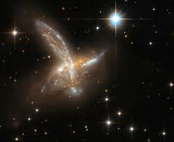
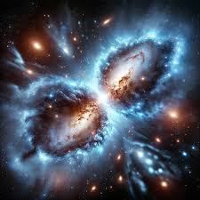

The Bullet Cluster
The strongest evidence for the existence of dark matter
- Bullet Cluster made up of two smaller clusters which had collided. During the collision, hot gas interacted producing a shockwave.
- Gravitational lensing provided evidence that the mass of the combined cluster was collected around the galaxies rather than the location of where the gas was.
- Provides an independent measurement of the mount of gas and dark matter in a galaxy cluster where in clusters plasma and dark matter are in the same regions.

